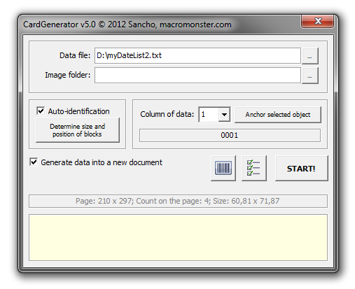

CardGenerator
Sancho / 07.07.2008, 23:32/00:41
Форум:
CardGenerator (старое название BarCode Auto) — макрос, который позволяет быстро и просто создавать нумерации, а так же импортировать и размещать переменные данные в файл CorelDRAW, будь то просто текст, картинки или штрих-коды! Не больше двух минут Вам понадобится, что бы создать 100 штрих-кодов, каждый из которых, имея свой уникальный номер, будет стоять на том месте, где Вам необходимо. И всё это не выходя из CorelDRAW!
Всем заранее спасибо!
Собрал пожелания и вот решил их воплотить:

В значительной степени изменился интерфейс макроса. Логика работы также претерпела некоторые изменения. Например, теперь можно выбрать любой столбец из файла данных и "привязать" его к определённому объекту в шаблоне. При этом макрос отображает первую строку данных из этого столбца, для быстрого и удобного поиска. Эта возможность позволяет использовать данные выборочно, а также использовать один столбец данных для нескольких переменных одновременно, например для штрих-кода и текстовой строки.
Добавлена поддержка Paragraph Text. К релизу также планируется более продвинутая система вставки изображений.
Пошаговую справку было решено удалить, а вместо неё сделать расширенные подсказки для элементов управления макроса, т.е. при наведении на какой то элемент, внизу главного окна макроса будет отображаться короткая справочная информация по нему.
Ну и как уже некоторые поняли, макрос будет распространятся вместе с утилитой для генерации QR кодов.
Помогите, у меня Х5 версия, но после установки макроса и его запуска выходи окошко: Макрос не совместим с вашей версией Corel DRAW
Julia, на странице макроса написано же:
Совместимость CorelDRAW: Х3 (13.0.0.739), Х4 (14.0.0.701), X5 (15.1.0.588)
а могу ли я обновить свой корел до нужной версии? как это сделать - подскажите, пожалуйста?
о, уже всё нашла!!! спасибо!!!
Уже больше двух лет пользуюсь этим макросом и всё супер. Облегчил мне работу неимоверно. А вот сейчас купил новый комп и появилась дилема: как из старого компа "выцарапать" без остатка макрос и перетащить его в новый? Ведь старый комп отдаю "в хорошие руки" - соседний детский садик, а там он не к чему. Подскажите как быть?
desnacard, написать письмо на e-mail с которого вам приходил ключ.
У нас возникла проблема! Сгенерированные макросом CardGenerator коды CODE 128 не считываются считывателем штрихкодов, сделав в кореле штрих код "от руки" обнаружили отличие между полученным с помощью генератора и "ручным" несколько штрихов отличаются хотя числовое значение в обоих одинаковое. в чем может быть проблема?
Страницы